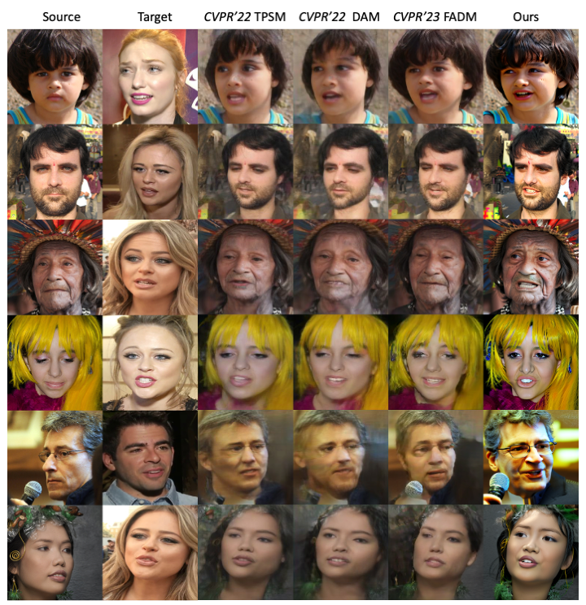

1. Motion Editing: Face Reenactment


This work presents FaceX framework, a novel facial generalist model capable of handling diverse facial tasks simultaneously.
To achieve this goal, we initially formulate a unified facial representation for a broad spectrum of facial editing tasks, which macroscopically decomposes a face into fundamental identity, intra-personal variation, and environmental factors. Based on this, we introduce Facial Omni-Representation Decomposing (FORD) for seamless manipulation of various facial components, microscopically decomposing the core aspects of most facial editing tasks. Furthermore, by leveraging the prior of a pretrained StableDiffusion (SD) to enhance generation quality and accelerate training, we design Facial Omni-Representation Steering (FORS) to first assemble unified facial representations and then effectively steer the SD-aware generation process by the efficient Facial Representation Controller (FRC).
Our versatile FaceX achieves competitive performance compared to elaborate task-specific models on popular facial editing tasks. Full codes will be available soon.


@article{000,
author = {aaa},
title = {bbb},
journal = {ccc},
year = {2023},
}